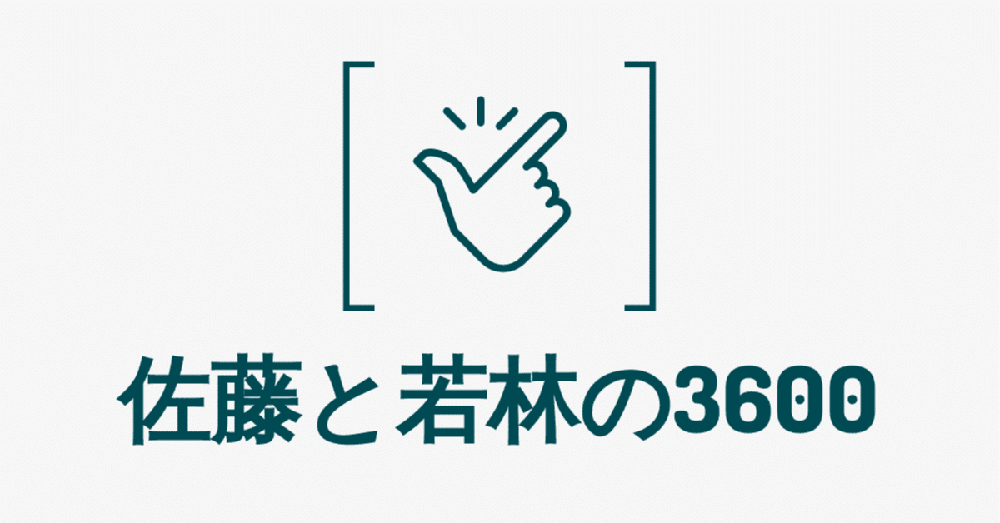

前々からこの題材で書いてみたいと考えてはいたものの、結局直前まで投稿しようか迷っていた。それもそう、このポッドキャストの中身は一切口外禁止なのだから。
それでも、この番組の素晴らしさこそ広く知られるべきだと常々思っていたから思い切って出すことにした。
ここに書かれていることは全部番組側から情報としてすでに公開されているものではあるが、そうだとしても僕にしてみれば、珍しく勇気を振り絞った行為である。
主に放送作家として活動する佐藤満春と、オードリーの若林正恭がAmazon オーディブルで配信している『佐藤と若林の3600』。
オードリーが全国的な知名度を獲得する前夜の2006年～2008年にかけて配信していた同番組。2人が所属するケイダッシュステージの仲良しコンビとして、仕事や私生活の話題を中心にトークが展開されていく。
この番組の醍醐味といったら、何といっても佐藤と若林の肩の力が抜けた心地よいトークであろう。
元々、佐藤はオードリーが売れる前からライブの手伝いをしており、今でもネタ作りや稽古に立ち会っていることから“3人目のオードリー”とも呼ばれる。長い付き合いだからこそ生まれた信頼関係が滲むやり取りは、聴き手にも大きな安心感を与えてくれるのだ。
ちなみに本番組を唯一聴けるAmazon オーディブルは月額1,500円する。
自他ともに認める倹約家であり、ここ数年は1円単位で家計簿をつけ無駄な出費は少しでも減らすのがポリシーになってしまった僕にとって、月1,500円のサブスクリプションは正直高いといえよう。
それでも、このポッドキャストには金額以上の価値があると思っている。番組名にも由来する配信時間の1時間=3,600秒は、僕が触れるエンターテインメントの中で最も大切な時間といっても差し支えない。
一切口外禁止ということもあり、その概要にしか触れられないのはあまりにも惜しい。
いわば知る人ぞ知る番組であったが、AmazonオーディブルやSpotifyで配信されているポッドキャストの中で優良なコンテンツ発掘を目的とした「第4回 JAPAN PODCAST AWARDS」で『佐藤と若林の3600』は見事大賞を受賞し、結果的にその名を知られる機会を得たことはイチファンとしてとても嬉しい出来事だった。そして、僕だけでない多くの人が2人の話をいつまでも聴いていたいと感じている事実に万感の思いになったのである。
本番組について、僕が語れるのはこの辺りまでだ。
ほかの芸人のラジオと同じように心身を軽やかにしてくれる話術で、熱い仕事論や私生活での知られざる顔を語り、本当だったら誰にも見せない哲学すら披露してくれる。
時間があっという間に過ぎるというのはまさにこのことだ。聴いているうちに、心のありようがみるみるうちに変わっていく。心が解きほぐされていく3,600秒を、貴方も体感してみてほしい。